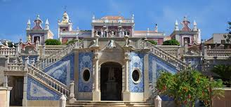

Faro é uma cidade portuguesa com cerca de 47 000 habitantes, capital do Distrito de Faro, da região, sub-região e ainda da antiga província do Algarve. É sede de um município com 202,57 km² de área e 64 560 habitantes (2011), subdividido em 4 freguesias. O município é limitado a norte e oeste pelo município de São Brás de Alportel, a leste por Olhão, a oeste por Loulé e a sul tem costa no Oceano Atlântico. Através do Aeroporto de Faro, a cidade constitui a terceira maior entrada externa do país (a seguir a Lisboa e Porto), o que lhe confere uma valência vincadamente cosmopolita.
Quanto ao clima, é mediterrânico, um clima em que a temperatura é amena durante todo o ano, um clima em que podemos desfrutar do sol mais de 300 dias por ano, e em que os meses que são verdadeiramente chuvosos são reduzidos em dois, Novembro e Dezembro. A temperatura no verão, durante o dia anda entre os 25 e 30 graus, e entre 15 e 20 graus no Inverno, salvo excepções. Durante a noite, as mínimas no Inverno andam por volta de 6 ou 7 graus e no Verão entre 15 e 20 graus.
Os meses mais quentes são os de Julho e Agosto. Os meses mais chuvosos são Novembro e Dezembro. Os meses mais frios são Janeiro e Fevereiro. As maior e menor temperaturas registadas em Faro no período 1971-2000 foram 39,8 °C e –1,4 °C. Porém,há registos 42,5 °C em 2004.
